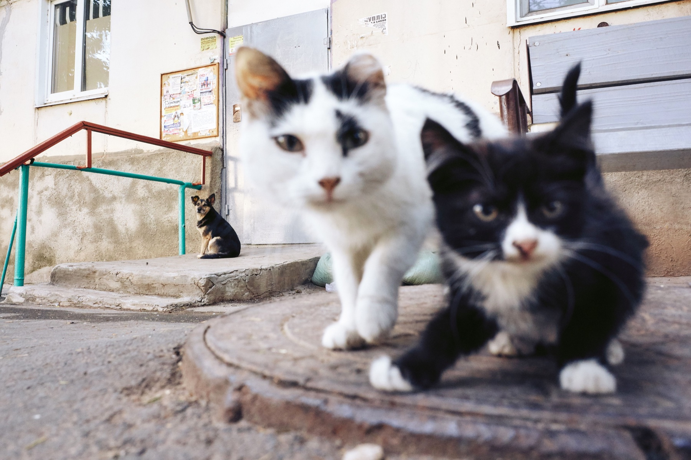
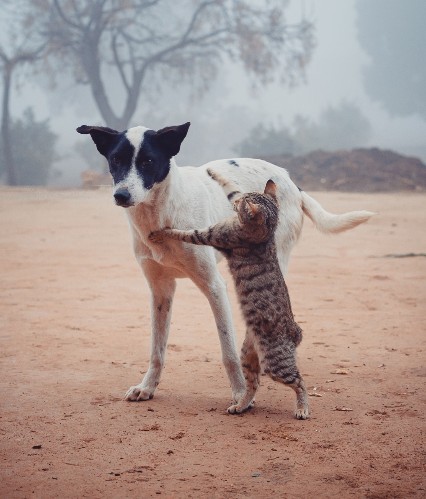
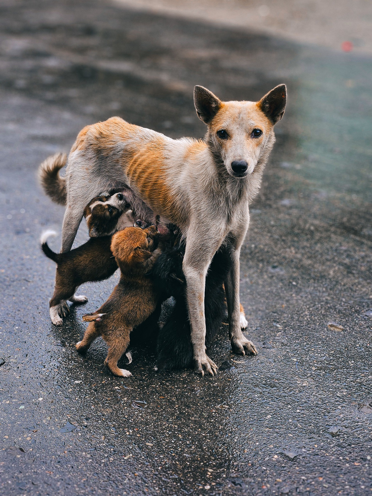
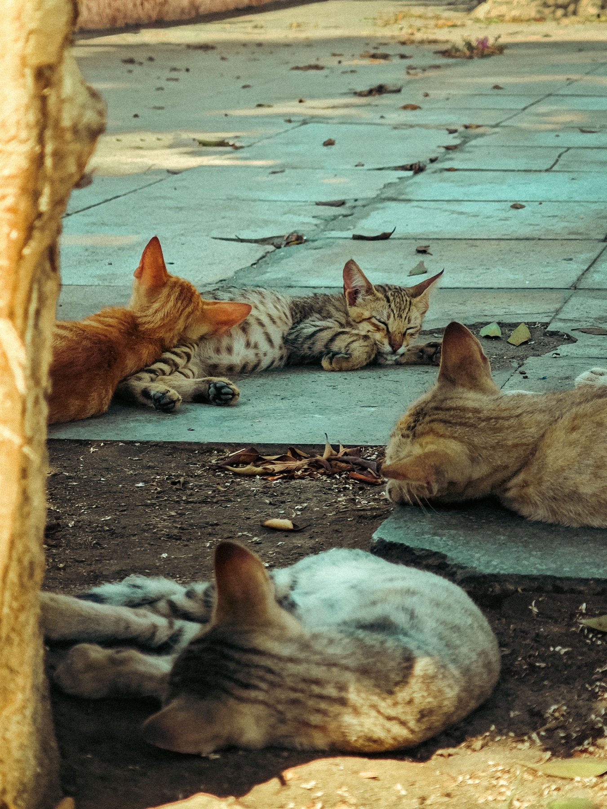
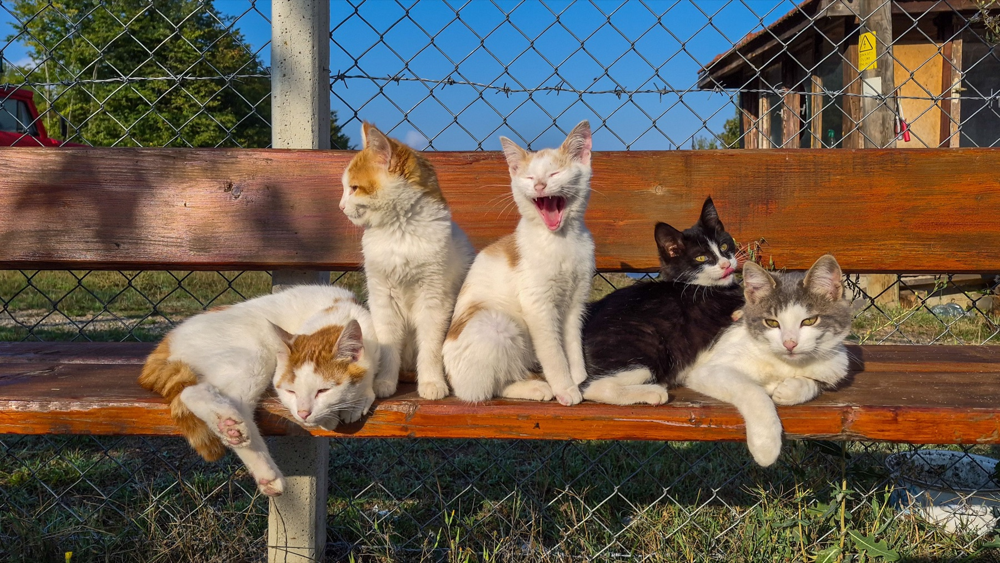
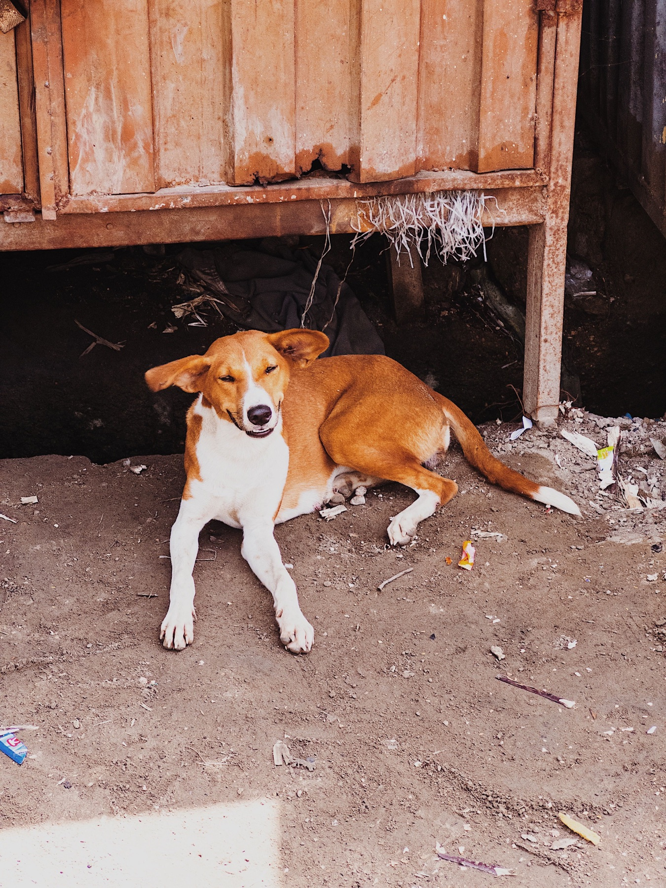

5,800,000
Entered shelters and rescues
Shelter Animals Count's estimated 2025 United States community intake for cats and dogs.
2025 · United States · Source ↗We're starting with cats and dogs in Houston, building stronger connections between rescues, fosters, and communities. Our vision is to transform animal welfare worldwide, one community at a time.






The Reality
5,800,000
Shelter Animals Count's estimated 2025 United States community intake for cats and dogs.
2025 · United States · Source ↗597,000
The estimated number of cats and dogs with a shelter euthanasia outcome across the United States in 2025—not all non-live outcomes.
2025 · United States · Source ↗22,445
Total 2025 intake reported by Houston's municipal BARC shelter, not all shelters or organizations in Houston.
2025 · Houston BARC · Source ↗National figures are estimates rounded by Shelter Animals Count. Local figures describe BARC only, not every animal or organization in Houston.
What Must Change
Improve access to resources, foster support, veterinary care, and earlier intervention so fewer animals fall through the cracks.
Research and advocate for stronger protections, better accountability, and more humane institutional practices.
Make reliable research accessible, challenge harmful assumptions, and encourage people to reconsider how animals are treated.
Develop an effective local model, learn from results, and ultimately help improve animal welfare in other communities.
01 / Starting in Houston
We begin by connecting people, rescues, fosters, and existing resources across Houston. We want to learn what works, improve how help reaches animals, and build a foundation for broader change.
02 / Be Part of the Change
Explore the evidence, find appropriate local resources, or learn where your time and experience may fit as Happy's develops.